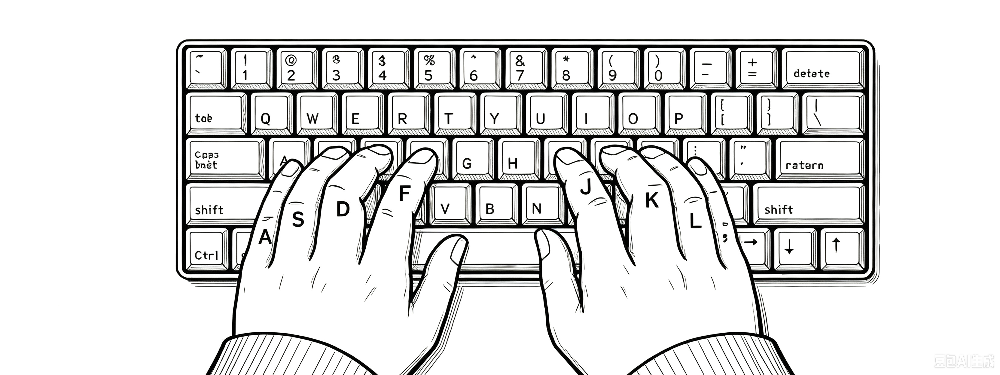

AltNav为基于AutoHotkey2实现的方向键映射脚本, 受Vim方向键设计启发, 通过左Alt键结合其他按键来实现方向移动/光标跳转, 使您的手不用离开键盘中心区域。
1 | 映射

- 按住
左Alt时,J、K、L、;键分别映射为←、↓、↑、→键。 - 按住
左Alt时,N、M、,、.键分别映射为连续4次的←、↓、↑、→。 - 按住
左Alt与Ctrl时,N、M、,、.键分别映射连续16次的←、↓、↑、→。 左Alt+I→ 光标移动到行首左Alt+O→ 光标移动到行末光标移至文件首
Ctrl+左Alt+I→Ctrl+Home
光标移至文件尾
Ctrl+左Alt+O→Ctrl+End
所有光标移动映射均支持按住
Shift键选中文本, 如Shift+左Alt+J即光标向左选中一个字符。 在行为上与常规的Shift+方向键相同。
2 | 特点
- 编辑文本时光标快速跳转, 双手不用离开键盘中心区, 不需依赖鼠标
- 结合
左Alt键触发, 不需区分阅读模式或编辑模式等, 不影响正常输出 - 快捷键映射为全局生效, 不止局限于某一应用
- 移动步长分为 1、4、16 三档, 兼顾精确与快速定位
3 | 安装
- Windows平台
- 依赖 AutoHotkey2
- 在权限更高的程序上输入则需要用管理员运行此脚本。
4 | 设计哲学
4.1 | 按键选取
JKL;参照了Vim的方向键设计。 但Vim原先的方向键顺序是H、J、K、L 分别对应左、下、上、右。 但一般手指搭在键盘上时, 右手食指是放在J键上的。 若要保持右手食指放在J键上不动, 同时放四根手指在四个键上、则只有JKL;最适合。

设计Home/End的映射时, 有两种方案。 方案A是当前采用的方案, 即左Alt+I/O; 方案B是左Alt+H/'。
方案B在语义上更佳, Home,←,↓,↑,→,End成一线。 但最终仍然选择了方案A。 因右手食指放在J键上时, 中指无名指会分别自然蜷缩在I/O上, 按起来更舒服; 且文本编辑中Home/End仍是高频使用的功能, 中指/无名指的组合 力量大于食指/小指。
4.2 | 方向顺序
方向顺序方面, 之所以选择了左,下,上,右顺序, 这样设计有两个好处:
- 顺序和Vim保持一致(但其实在设计出这套方向映射之前, 本人并没有接触过Vim风格的方向键, 也没有相应的习惯或肌肉记忆。)
- 下、上 键 分别由 中指 和 无名指 负责。 这两根手指按压力量较大, 适合频繁上下跳行翻阅内容的场景
也有两个坏处:
- 右方向键 使用频率更高但由力量小拇指负责
- 这个顺序乍一看有点反直觉。 按方向来分类, 四键方向键一共可以分出 横向 和 纵向 两个维度。
左,下,上,右的方案规律性不强。 若按左,右,上,下这样横向和纵向各自排列在一起的顺序看起来更直觉一些。
4.3 | 长距移动
快速移动时, 脚本提供 1、4、16 三种步长。 每一级都是前一级的 4 倍, 一次较大的移动可以替代 4 次较小的移动。 任意移动距离都可以用 ±1、±4、±16 组合出来。 这相当于用四进位分解移动距离：每个较大的步长都能减少总击键次数，同时保留单步移动提供的精确性。
在键位选取上, 从JKL;到NM,.相当于上下平移, 同一列保持同一方向, 上排负责单步, 下排负责4步, 再按住Ctrl则放大为16步。
5 | 已知问题
在远程控制软件/虚拟机下时此脚本可能不能正常工作